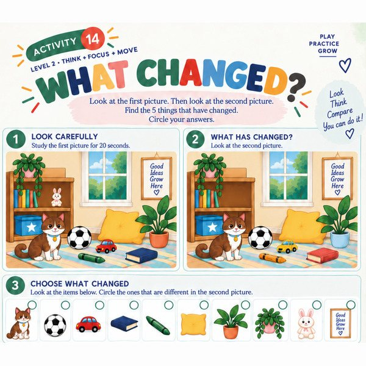
Look closely
Study a picture, then find the five things that changed in the second one.
Neuro Games is a screen-free workbook where kids spot what changed, find the path and finish the pattern, then cross a hand to the opposite knee, balance on one foot and switch hands. Most challenges pair thinking with moving.
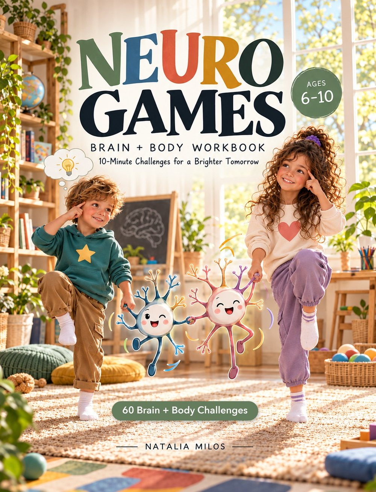
“I made this book for my own children. They were its first testers.”
My new book, Neuro Games, is now on Amazon.
Many of you know me as the director of Coddy. For more than 10 years I have worked with children, and again and again I saw the same thing: kids engage differently when they can think and move at the same time.
At home, while practicing with my own kids, I collected activities from textbooks and video lectures. Little by little the idea grew to bring them together in one book.
My toughest examiner was our grandmother, a doctor with 40 years of practice who spent years caring for children at the Suvorov Military School and a children's wushu federation. She quizzed me on anatomy and physiology before my exams, and her checks would make Minos and Procrustes look lenient.
The result is 60 short challenges, most of them pairing a puzzle with a move. One minute your child is spotting what changed in a picture, the next they are reaching a hand to the opposite knee or standing on one foot.
The illustrations were drawn by AI from my detailed instructions, which helped keep the book affordable. The concept, the choice and adaptation of every activity, the two age versions, and all the checking and redoing are human work.
— Natalia Milos (I write as Milos, short for my surname, Miloserdnaya)
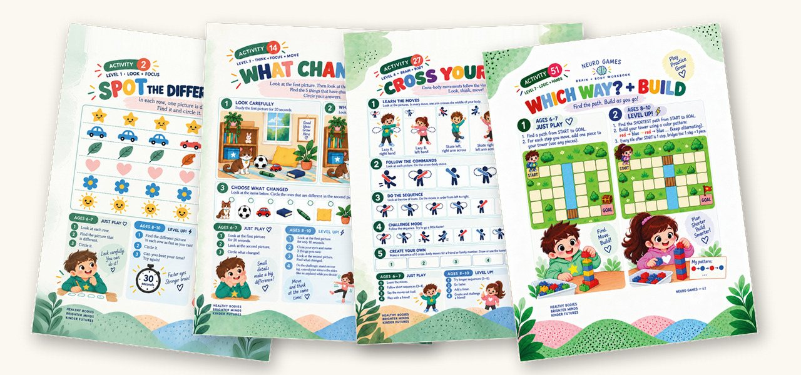
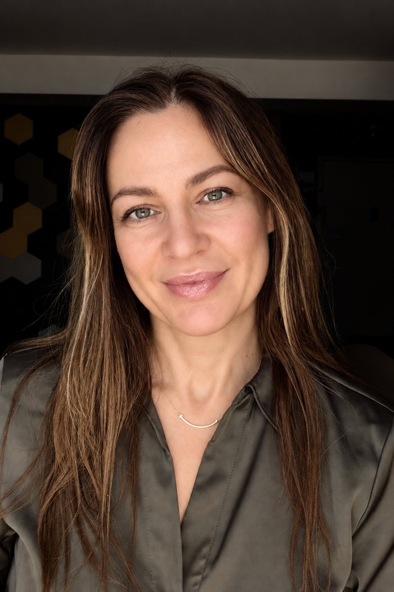
Natalia Milos is the director of Coddy, a coding school for kids in New York, and has worked with children for more than 10 years. She trained in youth fitness, personal fitness training, and brain fitness; her Fitness Professional Association courses included coursework in anatomy and physiology.
Tap a certificate to see it full size. Certificates are issued to her full name, Natalia Miloserdnaya.
Eight levels, from Look + Focus and Left + Right to Logic + Hands and Super Brain. Every activity has two parts, Just Play for ages 6–7 and Level Up! for ages 8–10, so siblings can share one book.

Study a picture, then find the five things that changed in the second one.
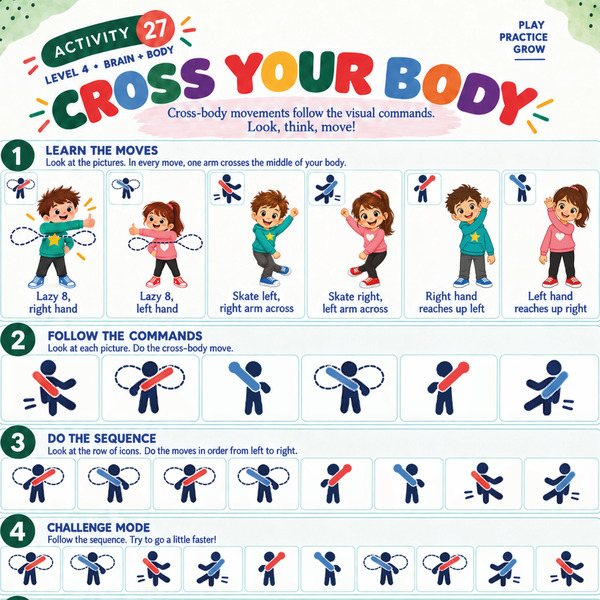
Follow picture commands where one arm crosses the middle of the body: lazy eights, skating steps, a hand reaching to the other side.
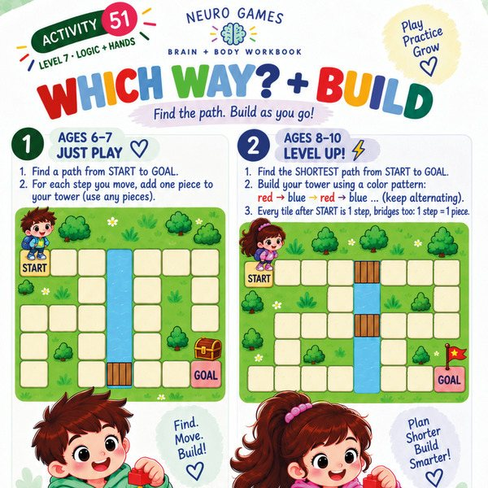
Find the way from START to GOAL and add one block to your tower for every step.
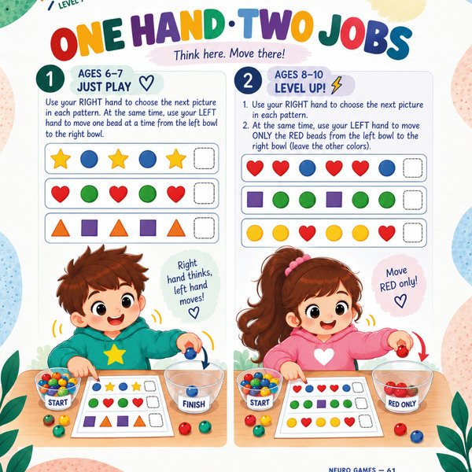
Finish a pattern with one hand while the other moves beads from bowl to bowl.
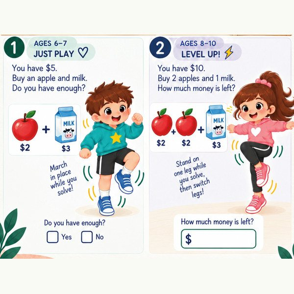
Shopping sums while marching in place or balancing on one leg.
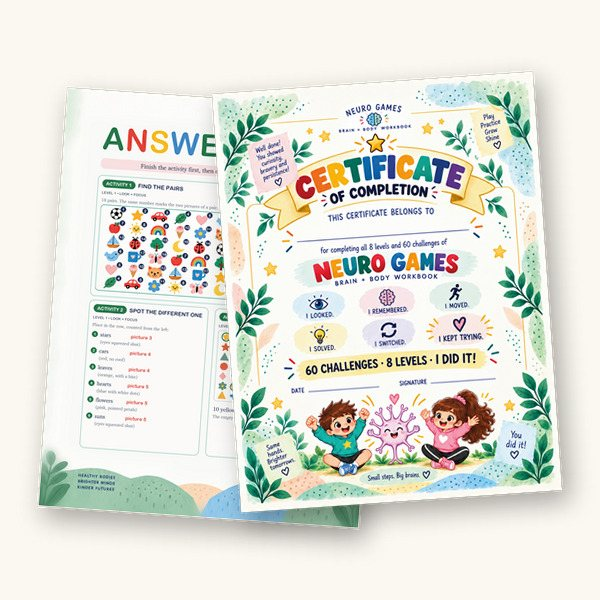
Answer keys for every puzzle with a right answer, and a certificate to celebrate the finish.
Research on movement-and-thinking play is still growing. See what studies found below.
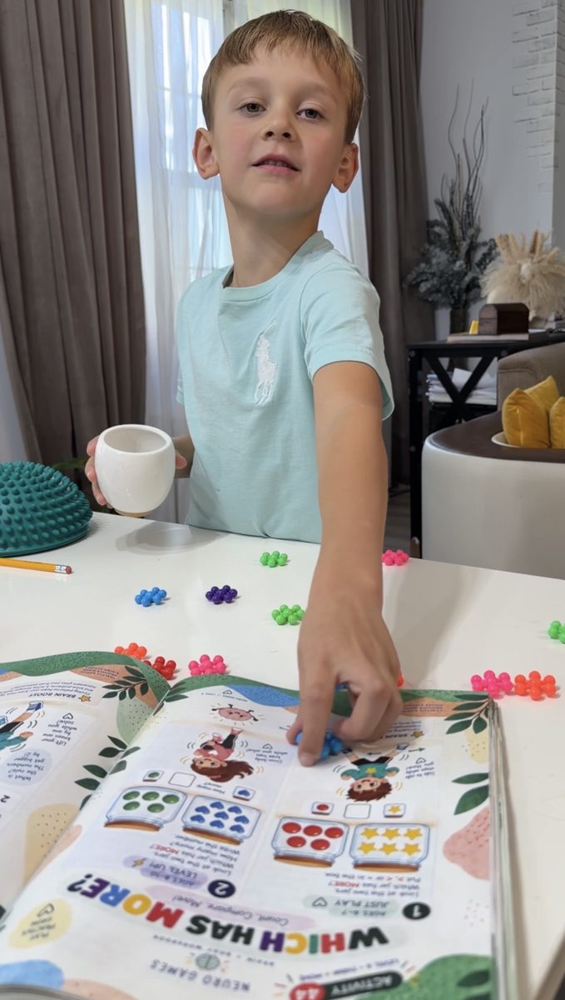
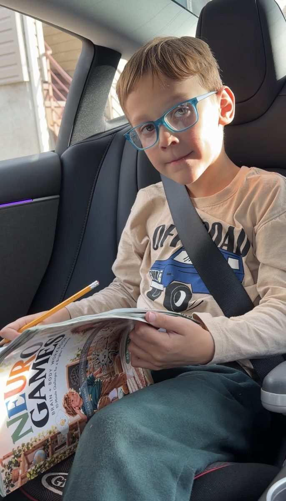
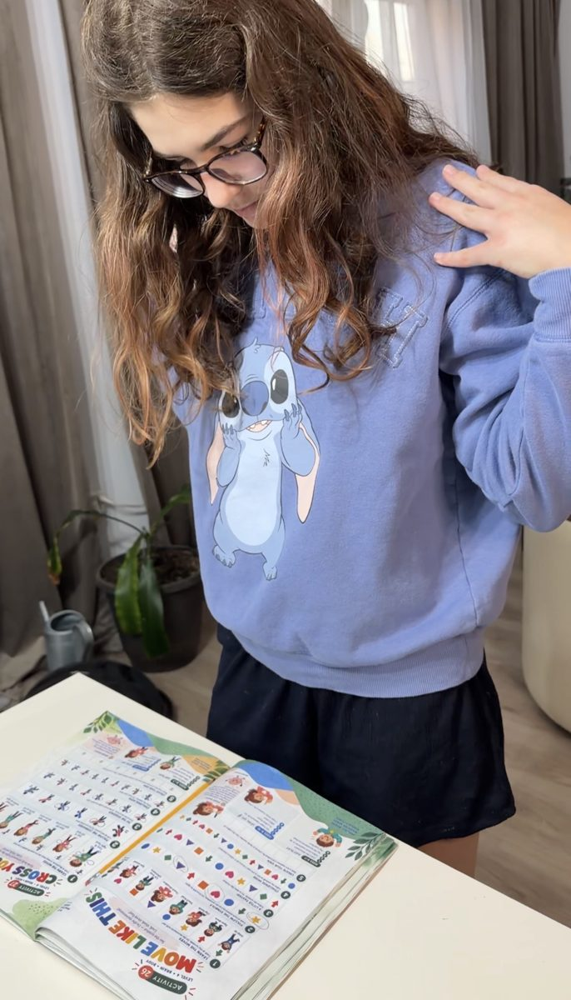
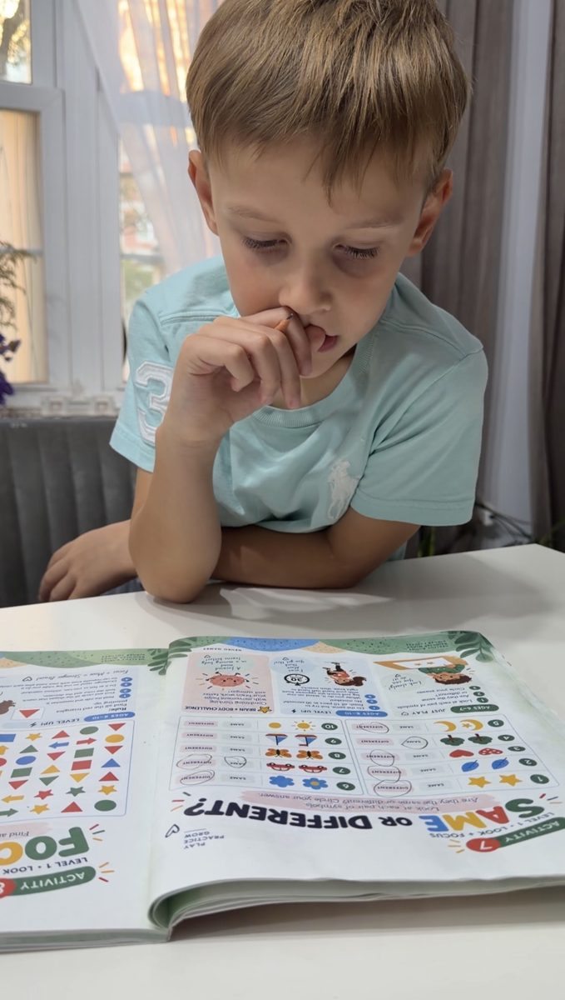
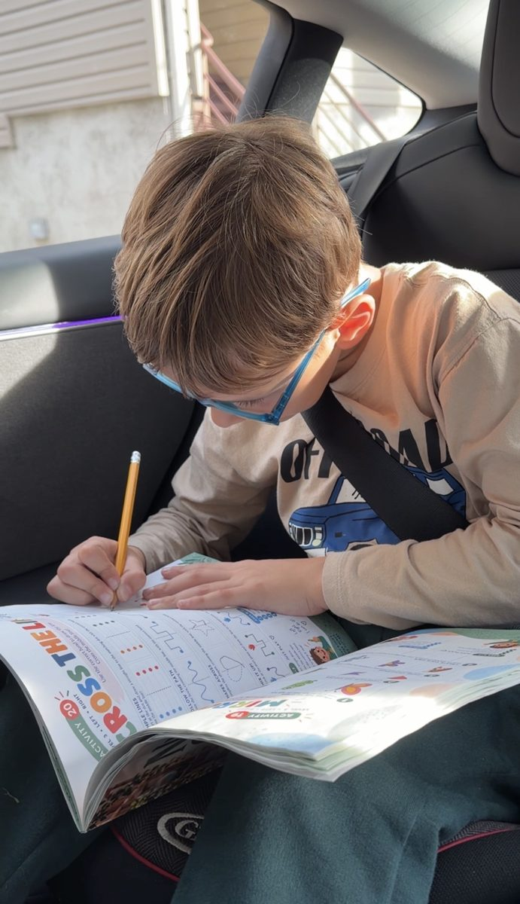
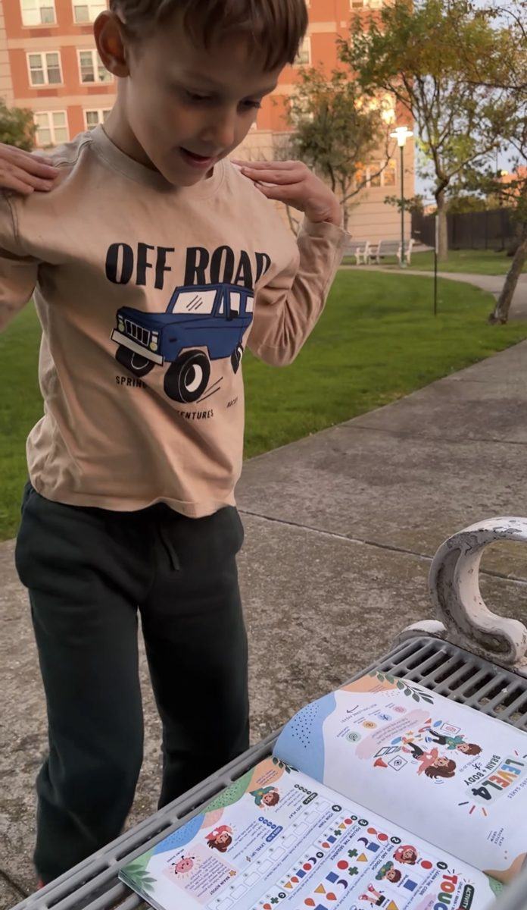
Researchers have been studying how physical activity relates to children's attention and thinking skills for years, and a growing line of work looks at movement that also makes kids think. Here is what some of the key studies found, in plain words.
Children aged 7–9 in a daily, roughly two-hour after-school physical activity program improved more than a comparison group on tasks of attention control and mental flexibility. Those who attended more gained more.
Hillman et al., Pediatrics, 2014 →The expert committee behind the 2018 US guidelines found moderate evidence that physical activity is linked to better thinking skills in children aged 6–13, and strong evidence that a single bout of moderate-to-vigorous activity improves thinking for a short time afterwards.
Erickson et al., Medicine & Science in Sports & Exercise, 2019 →In a 6-week PE study with children aged 10–12, games that were physically active and mentally demanding improved one of the skills measured: switching between rules. Plain aerobic exercise with the same fitness gain did not.
Schmidt et al., Journal of Sport & Exercise Psychology, 2015 →A large review of programs for children's planning and self-control skills concluded that "mindless" aerobic exercise does little, while activities that combine movement with thinking look more promising, though gains mostly show up in the skills practiced.
Diamond & Ling, Developmental Cognitive Neuroscience, 2016 →Across dozens of primary-school studies, classroom activity breaks and active lessons were linked to children staying more on-task.
Watson et al., International Journal of Behavioral Nutrition and Physical Activity, 2017 →A systematic review found generally positive links between physical activity and children's thinking, and no sign that time spent moving harms learning, though the authors call the evidence inconsistent.
Donnelly et al., Medicine & Science in Sports & Exercise, 2016 →Neuro Games is built on these ideas. The book itself has not been tested in a scientific study, and it is an activity book, not a treatment.
Neuro Games: Brain + Body Workbook
10-Minute Challenges for a Brighter Tomorrow.
Paperback, 82 pages, ages 6–10.